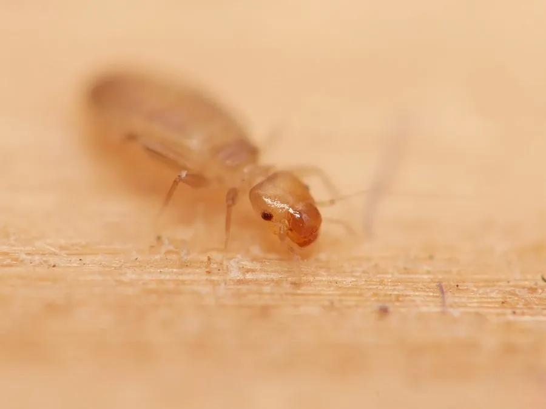

昆虫 · 动物界
书虱 Liposcelis bostrychophila

体长仅一毫米、无翅的仓贮害虫，栖于书籍、粮食和潮湿墙角，取食霉菌与淀粉，繁殖极快。
- 分类
- 门节肢动物门纲昆虫纲目啮虫目科书虱科属书虱属
- 栖息环境
- 粮库、面粉厂、图书馆、档案室与潮湿墙角
- 地理分布
- 世界各地，中国南北各地仓贮与居室环境普遍
- 保护级别
- 常见仓贮害虫，无保护需求
物种志
书虱的成虫体长仅一毫米左右，体扁平，淡黄褐至灰褐色，无翅，头部较大，触角细长，后足腿节粗壮，爬行迅速。它没有翅也不会飞，靠爬行和随货物、包装材料传播。体表有细毛，腹部可见环节，肉眼看去像一粒会移动的灰尘。
它分布于世界各地，中国南北的粮库、面粉厂、图书馆和居民住宅中都能见到，喜欢气温二十五度上下、湿度较高的环境。它以霉菌、淀粉、纸张、谷物碎屑和昆虫尸体为食，不直接咬人，但大量发生时污染粮食和书籍，其尸体和排泄物还可能引起过敏。它以孤雌生殖为主，一只雌虫无需交配就能建立种群，繁殖极快。防治关键是降低湿度、保持通风干燥。
形态与习性
- 体长仅约一毫米，肉眼如灰尘
- 翅无翅，靠爬行与货物传播
- 食性霉菌、淀粉、纸张、谷物碎屑
- 生殖以孤雌生殖为主，单只即可建群
- 危害污染粮食书籍，尸体可致过敏
- 防治降湿、通风、干燥储粮
趣味知识
- 它不需要交配就能繁殖，一只雌虫关在干燥的纸箱里也能发展成一个种群。
- 书页边缘那些细小的虫孔，多半是它啃出来的。
- 把湿度降到一半以下，它很快就会脱水死亡，比喷药更有效。